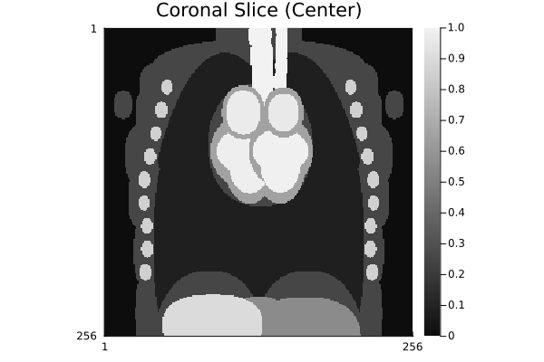
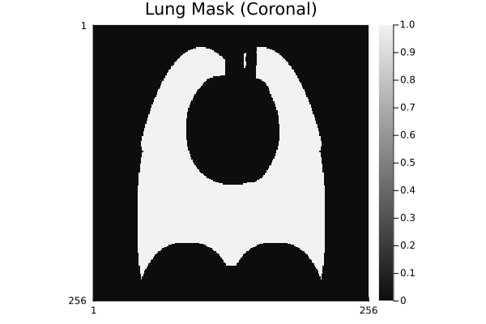
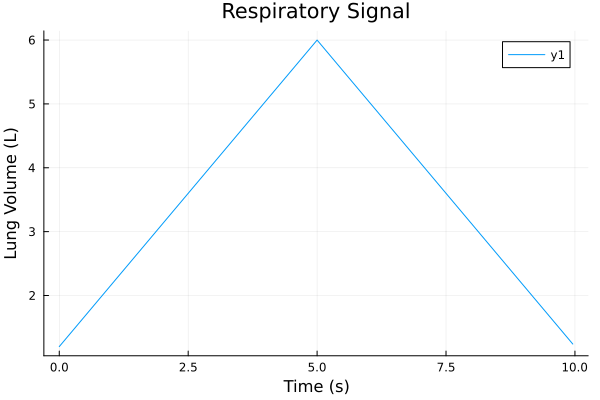

Torso Phantom
The Torso phantom provides a schematic representation of the human thorax. It includes major organs (heart, lungs, liver), blood vessels, bones, and soft tissues. The main feature of this phantom is that it supports dynamic physiological motion simulation, enabling testing and benchmarking of acquisition methods sensitive to respiratory and cardiac motion.
Basic Usage
Static Anatomy (No Motion)
Generate a 2D slice at a specific anatomical location:
# Axial slice through the heart
phantom_axial = create_torso_phantom(256, 256, :axial; slice_position=0.0)
jim(phantom_axial; title="Axial Slice (Heart Level)")
# Coronal slice showing front-to-back view
phantom_coronal = create_torso_phantom(256, 256, :coronal; slice_position=0.0)
jim(phantom_coronal; title="Coronal Slice (Center)", yflip=false)
# Sagittal slice showing left-right view
phantom_sagittal = create_torso_phantom(256, 256, :sagittal; slice_position=0.0)
jim(phantom_sagittal; title="Sagittal Slice (Center)", yflip=false)
Spatial Slicing GIFs
Generate GIFs showing anatomical variation through the entire organ:
using FileIO, ImageIO, ImageMagick
# Create 3D torso for slicing
phantom_3d = create_torso_phantom(128, 128, 128)
nx, ny, nz = size(phantom_3d)
# Axial slices GIF
frames_axial = zeros(UInt8, nx, ny, nz)
max_val = maximum(abs.(phantom_3d))
for i in 1:nz
slice = abs.(phantom_3d[:, :, i])
frames_axial[:, :, i] = map(x -> UInt8(round(clamp(x / max_val, 0, 1) * 255)), slice)
end
save("torso_axial_slices.gif", frames_axial, fps=10)
# Coronal slices GIF
frames_coronal = zeros(UInt8, nx, nz, ny)
for i in 1:ny
slice = abs.(phantom_3d[:, i, :])
frames_coronal[:, :, i] = map(x -> UInt8(round(clamp(x / max_val, 0, 1) * 255)), slice)
end
save("torso_coronal_slices.gif", frames_coronal, fps=10)
# Sagittal slices GIF
frames_sagittal = zeros(UInt8, ny, nz, nx)
for i in 1:nx
slice = abs.(phantom_3d[i, :, :])
frames_sagittal[:, :, i] = map(x -> UInt8(round(clamp(x / max_val, 0, 1) * 255)), slice)
end
save("torso_sagittal_slices.gif", frames_sagittal, fps=10)
Tissue Customization
You can easy overwrite intensities of one or more organs while leaving the rest unchanged. Note that default intensities are chosen for high-contrast visuals and are not meant to represent specific physical parameters (like T1 or T2).
# Create custom tissue intensities
# Start with default and override specific tissues
base_tissues = TissueIntensities()
custom_tissues = TissueIntensities(
lung=0.10, # Override lung
heart=base_tissues.heart,
vessels_blood=base_tissues.vessels_blood,
bones=base_tissues.bones,
liver=base_tissues.liver,
stomach=base_tissues.stomach,
body=0.30 # Override body
# cardiac chambers use their own defaults in the creator if not specified or separate
)
# Alternatively, use the constructor with specific kwargs if supported,
# or just define the ones you care about if creating a full struct:
custom_tissues_2 = TissueIntensities(
lung=0.3,
heart=0.8,
vessels_blood=1.0,
bones=0.1,
liver=0.5,
stomach=0.9,
body=0.2,
lv_blood=1.0, rv_blood=1.0, la_blood=0.9, ra_blood=0.9
)
phantom_custom = create_torso_phantom(256, 256, :coronal; ti=custom_tissues_2)
jim(phantom_custom; title="Custom Tissue Intensities (Coronal)", yflip=false)
Tissue Masking
Extract individual organs or tissue types:
# Create mask for lungs only
lung_mask = create_torso_phantom(256, 256, :coronal; ti=TissueMask(lung=true))
jim(lung_mask; title="Lung Mask (Coronal)", yflip=false)
# Create mask for heart chambers
heart_mask = create_torso_phantom(256, 256, :coronal; ti=TissueMask(heart=true))
jim(heart_mask; title="Heart Mask (Coronal)", yflip=false)
Physiological Signal Integration
The Torso phantom supports dynamic simulation of respiratory and cardiac motion. This is crucial for understanding how motion affects image quality and for developing motion correction algorithms.
Respiratory Motion
The lungs expand and contract during breathing, changing the positions and volumes of surrounding structures.
Respiratory Physiology Model
The respiratory model simulates breathing mechanics based on the following principles:
Realistic lung volume range: Humans typically breathe with tidal volumes of 0.5-1.0 L (quiet breathing) to 2-3 L (deep breathing). The total lung capacity is ~6 L. The phantom uses a nominal range of 1.2-6.0 L, capturing from minimal to maximal inspiration.
Lung volume mechanics: As the lungs expand, the diaphragm moves downward and the chest expands laterally. In the anterior-posterior view (coronal plane), this expansion is most visible. The phantom modulates both the size and position of lung structures based on the input volume signal.
Signal timing: Healthy adults breathe at rates of 12-20 breaths per minute at rest. During imaging, subjects are typically coached to breathe regularly, often at slower rates (8-15 breaths/min) to minimize motion artifacts.
Validation: The phantom's volume-to-geometry mapping is designed to stay within physiologically realistic bounds. Validation against the input respiratory signals confirms that measured phantom volumes match the prescribed input, within expected ranges for the numerical simulation.
Using Respiratory Signals
using FileIO
# Generate a realistic respiratory signal
# Parameters:
# - duration: 10 seconds
# - fs: 24 Hz (frame rate matches typical cine imaging)
# - min_volume: 1.2 L (minimal inspiration)
# - max_volume: 6.0 L (maximal inspiration)
fs = 24.0 # frames per second
duration = 10.0 # seconds
min_volume = 1.2 # liters
max_volume = 6.0 # liters
# Create triangular breathing pattern (inhale then exhale)
t = collect(0:1/fs:duration-1/fs)
resp_liters = similar(t)
for (idx, tt) in enumerate(t)
if tt <= duration/2
# Inhalation phase: linear ramp from min to max
resp_liters[idx] = min_volume + (max_volume - min_volume) * (2*tt / duration)
else
# Exhalation phase: linear ramp from max to min
resp_liters[idx] = max_volume - (max_volume - min_volume) * (2*(tt - duration/2) / duration)
end
end
# Create 4D phantom with respiratory motion
phantom_4d_resp = create_torso_phantom(128, 128, 128;
fovs=(35.0, 35.0, 35.0),
respiratory_signal=resp_liters)
println("4D phantom shape: $(size(phantom_4d_resp))")
println("Respiratory signal range: $(round(minimum(resp_liters), digits=2)) - $(round(maximum(resp_liters), digits=2)) L")
plot(t, resp_liters, xlabel="Time (s)", ylabel="Lung Volume (L)", title="Respiratory Signal")4D phantom shape: (128, 128, 128, 240)
Respiratory signal range: 1.2 - 6.0 L
Generate a temporal GIF showing how the coronal slice changes during the respiratory cycle:
# Extract center coronal slice and animate over time
mid_y = cld(128, 2)
nt = size(phantom_4d_resp, 4)
fs_actual = nt / duration
frames_coronal_temporal = zeros(UInt8, 128, 128, nt)
max_val = maximum(abs.(phantom_4d_resp))
for i in 1:nt
slice = abs.(phantom_4d_resp[:, mid_y, :, i])
frames_coronal_temporal[:, :, i] = map(x -> UInt8(round(clamp(x / max_val, 0, 1) * 255)), slice)
end
save("torso_respiratory_motion.gif", frames_coronal_temporal, fps=24)
The GIF shows the lungs expanding and contracting, and the heart and liver shifting position as the diaphragm moves during breathing.
Cardiac Motion
The heart beats cyclically, with each chamber contracting and relaxing in precise timing to pump blood. This motion is essential for cine MRI and cardiac assessment.
Cardiac Physiology Model
The cardiac motion model follows the physiological cardiac cycle:
Chamber volumes: The four cardiac chambers (left ventricle, right ventricle, left atrium, right atrium) change volumes throughout the heartbeat. Typical values at rest:
- Left ventricle: ~120 mL at end-diastole (maximum filling), ~40-50 mL at end-systole (maximum contraction)
- Right ventricle: ~100-130 mL at end-diastole, ~30-40 mL at end-systole
- Atria: ~50-70 mL each during diastole, contracts during atrial kick
Cardiac cycle timing: At a heart rate of 72 bpm (1.2 Hz), each heartbeat lasts approximately 833 ms, divided into:
- Atrial contraction (P-wave): ~100 ms
- Isovolumetric contraction: ~50 ms
- Ventricular ejection (T-wave): ~300 ms
- Isovolumetric relaxation: ~80 ms
- Ventricular filling: ~300 ms
Atrial kick: The atria contract near the end of ventricular diastole, adding ~20-30% to ventricular filling. This is critical for cardiac output.
Validation: The phantom's chamber volumes follow the typical cardiac pressure-volume relationships and timing sequences. Validation confirms that measured phantom volumes match input cardiac signals within physiological ranges, confirming realistic motion patterns.
Using Cardiac Signals
# Generate cardiac signals for four heart chambers
using GeometricMedicalPhantoms: generate_cardiac_signals
# Parameters:
# - duration: 10 seconds (allows multiple heartbeats)
# - fs: 24 Hz
# - heart_rate: 72 bpm (typical resting heart rate)
duration_cardiac = 10.0 # seconds
fs_cardiac = 24.0 # Hz
heart_rate = 72.0 # beats per minute
# Generate realistic chamber volumes
t_cardiac, cardiac_volumes = generate_cardiac_signals(duration_cardiac, fs_cardiac, heart_rate)
# cardiac_volumes is a NamedTuple with fields: lv, rv, la, ra (volumes in mL)
println("Cardiac signal shape: $(size(t_cardiac))")
println("Left atrium (LA) volume range: $(round(minimum(cardiac_volumes.la), digits=1)) - $(round(maximum(cardiac_volumes.la), digits=1)) mL")
println("Left ventricle (LV) volume range: $(round(minimum(cardiac_volumes.lv), digits=1)) - $(round(maximum(cardiac_volumes.lv), digits=1)) mL")
println("Right atrium (RA) volume range: $(round(minimum(cardiac_volumes.ra), digits=1)) - $(round(maximum(cardiac_volumes.ra), digits=1)) mL")
println("Right ventricle (RV) volume range: $(round(minimum(cardiac_volumes.rv), digits=1)) - $(round(maximum(cardiac_volumes.rv), digits=1)) mL")
plot(t_cardiac, cardiac_volumes.la, label="LA", xlabel="Time (s)", ylabel="Volume (mL)", title="Cardiac Chamber Volumes")
plot!(t_cardiac, cardiac_volumes.lv, label="LV")
plot!(t_cardiac, cardiac_volumes.ra, label="RA")
plot!(t_cardiac, cardiac_volumes.rv, label="RV")Cardiac signal shape: (240,)
Left atrium (LA) volume range: 27.1 - 60.3 mL
Left ventricle (LV) volume range: 55.0 - 130.1 mL
Right atrium (RA) volume range: 27.5 - 60.3 mL
Right ventricle (RV) volume range: 65.0 - 140.3 mL
Create a 4D phantom with cardiac motion:
phantom_4d_cardiac = create_torso_phantom(128, 128, 128;
fovs=(35.0, 35.0, 35.0),
cardiac_volumes=cardiac_volumes)
println("4D cardiac phantom shape: $(size(phantom_4d_cardiac))")4D cardiac phantom shape: (128, 128, 128, 240)Combined Respiratory and Cardiac Motion
Real imaging scenarios include both respiratory and cardiac motion simultaneously:
# Generate both signals
phantom_4d_combined = create_torso_phantom(128, 128, 128;
fovs=(35.0, 35.0, 35.0),
respiratory_signal=resp_liters,
cardiac_volumes=cardiac_volumes)
println("Combined 4D phantom shape: $(size(phantom_4d_combined))")Combined 4D phantom shape: (128, 128, 128, 240)Visualize the combined motion in a temporal GIF:
# Extract center coronal slice with both respiratory and cardiac motion
mid_y_combined = cld(128, 2)
nt_combined = size(phantom_4d_combined, 4)
frames_combined = zeros(UInt8, 128, 128, nt_combined)
max_val_combined = maximum(abs.(phantom_4d_combined))
for i in 1:nt_combined
slice = abs.(phantom_4d_combined[:, mid_y_combined, :, i])
frames_combined[:, :, i] = map(x -> UInt8(round(clamp(x / max_val_combined, 0, 1) * 255)), slice)
end
save("torso_cardiorespiratory_motion.gif", frames_combined, fps=24)Validation Methodology
The phantom's physiological accuracy is validated by measuring the actual organ volumes in the generated images and comparing them to the input signals:
Lung volume validation: The respiratory signal specifies desired lung volumes in liters. The phantom generation algorithm modulates the size and position of lung structures accordingly. After phantom generation, the measured volume of pixels assigned to the "lung" tissue type is extracted and validated to match the input signal within expected numerical accuracy and the discretization effects of the 128³ grid.
Heart chamber validation: Similarly, the cardiac signals specify desired volumes (in mL) for each of the four cardiac chambers. The phantom measures these chamber volumes by counting voxels and comparing to input volumes. The validation confirms that chamber volume changes follow the prescribed cardiac cycle, with physiologically realistic timing and magnitude.
Expected error bounds: Discretization errors and interpolation introduce small differences between input volumes and measured volumes. Testing confirms these differences remain small (typically <5% relative error), validating the phantom's fidelity to the input signals.
Example validation code for lung volume:
using GeometricMedicalPhantoms: calculate_volume
duration = 4.0
fs = 24.0
rr = 15.0
t, resp = generate_respiratory_signal(duration, fs, rr)
# Create phantom with moderate resolution for faster computation
nx, ny, nz = 128, 128, 128
fov = (30, 30, 30)
phantom = create_torso_phantom(nx, ny, nz; respiratory_signal=resp)
lung_vol_L = zeros(Float64, length(resp))
# Calculate lung volumes using utility function that counts voxels assigned to lung tissue type and converts to liters based on voxel size
for m in 1:length(resp)
frame = phantom[:, :, :, m]
lung_vol_L[m] = calculate_volume(frame, (0.075f0, 0.11f0), fov)
end
plot(t, resp, label="expected", title="Lung volumes")
plot!(t,lung_vol_L, label="measured", xlabel="time (s)", ylabel="volume (L)")